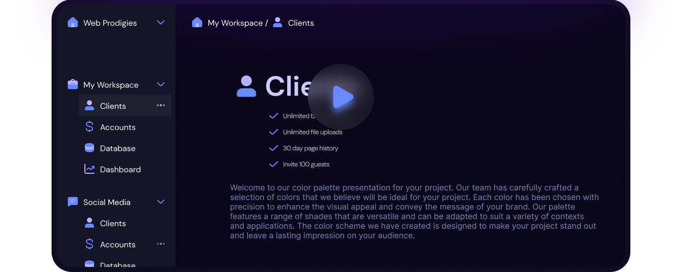
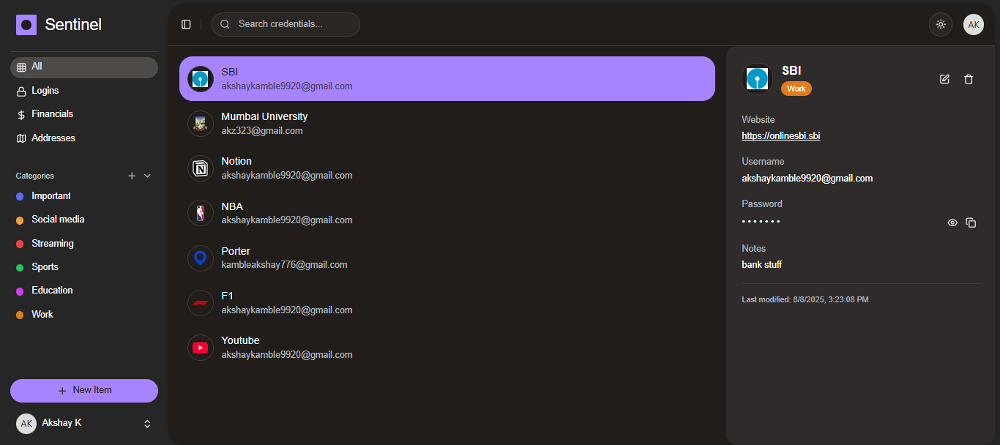
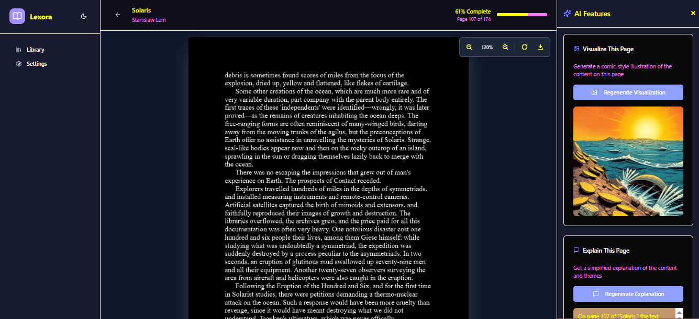
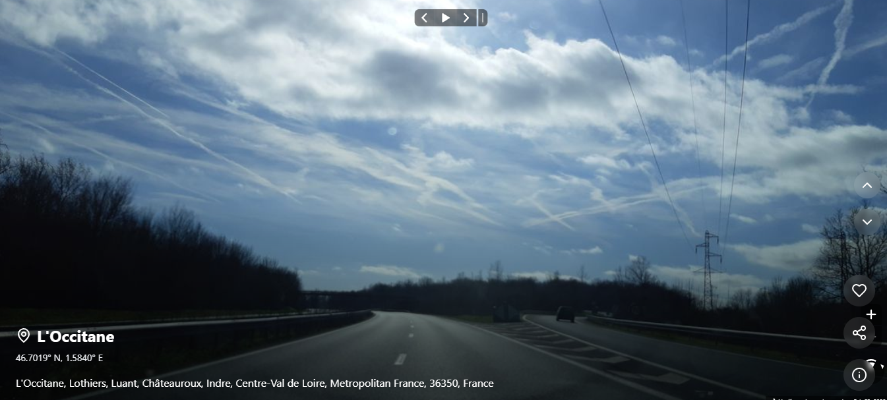
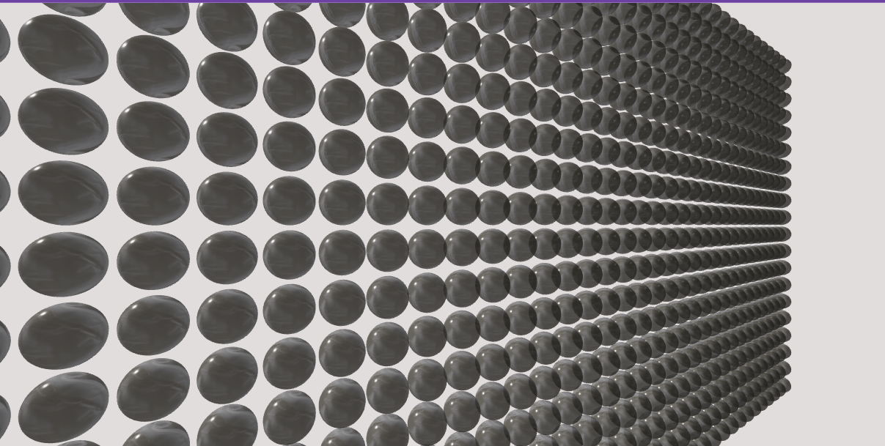

01
Brainstorm
↗An AI-powered collaborative workspace that helps ideas become clearer while you work.

A few things I’ve designed, built, and shipped.
An AI-powered collaborative workspace that helps ideas become clearer while you work.

A password manager extension and web app designed to make secure habits feel effortless.

An AI e-book reader with visualizations, explanations, search, and a calmer way to learn.

A swipeable journey through the world, built for curiosity and free-form exploration.

A lightweight 3D bubble wrap simulator for a small moment of satisfying relief.

Learning by shipping with a good team.
Building and maintaining web interfaces, reusable UI components, and new features across ongoing projects. I collaborate with designers and backend developers, fix bugs, and keep performance moving in the right direction.
Graduated with a CGPI of 8.83/10, with a focus on the practical side of software and the curiosity to keep learning beyond the syllabus.
The approach behind the work.
I’m an aspiring web developer based in Mumbai, interested in the intersection of web development and generative AI.
My favorite part of the process is the middle: making sense of an ambiguous idea, finding the simplest useful shape, and building the details until the product feels obvious.
More on GitHub ↗Always learning, usually building.
HTML · CSS · JavaScript · Core Java
React · Next.js · Express.js · Tailwind CSS
SQL · MongoDB · Git · GitHub · Stripe · Firebase
Tell me what you’re working on. I’m always up for a thoughtful conversation and a useful next step.
Start a conversation ↗